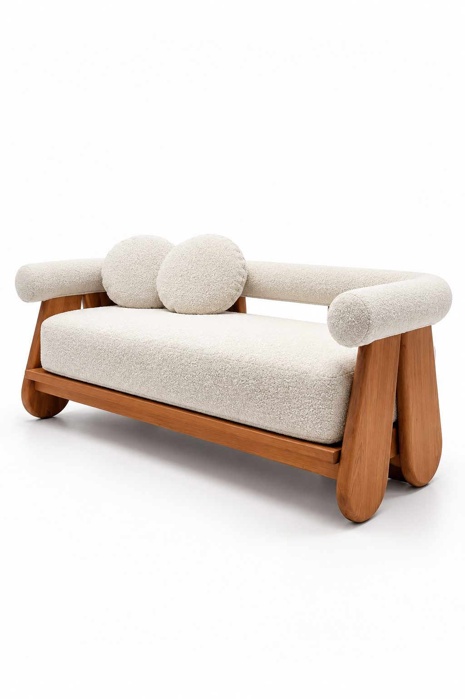
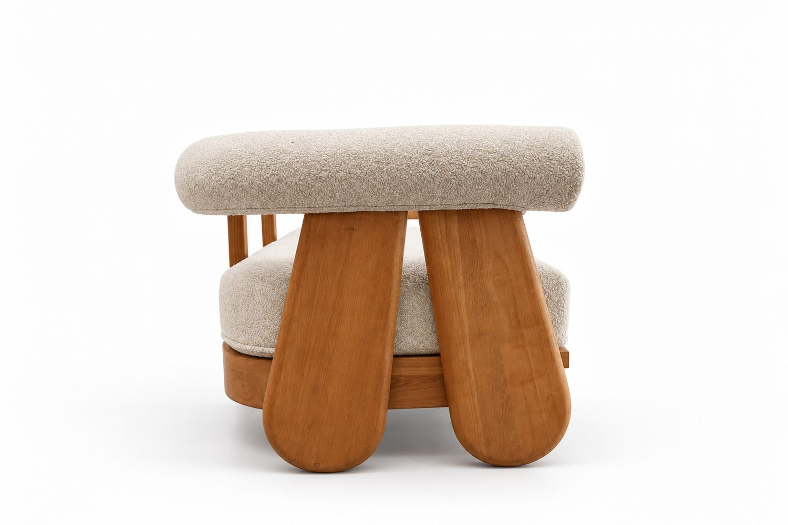
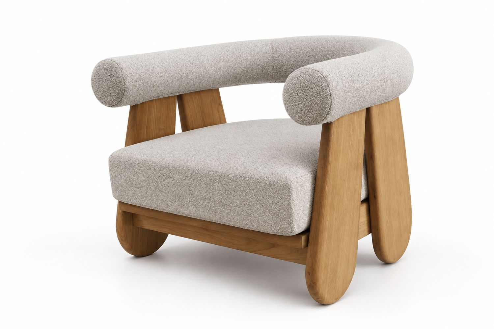
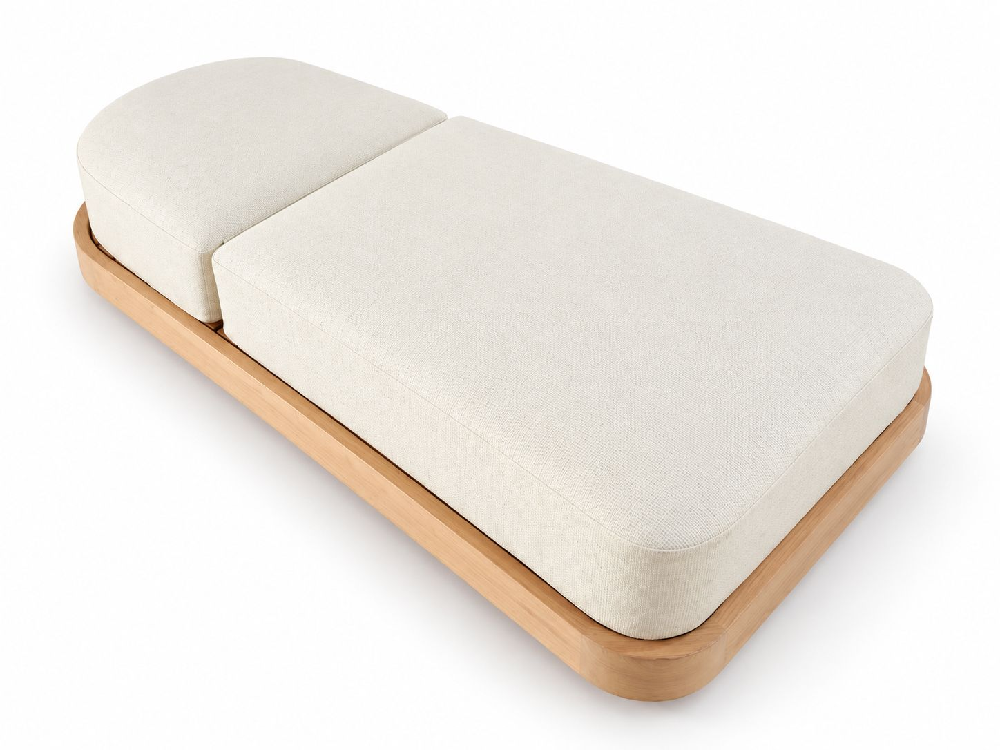
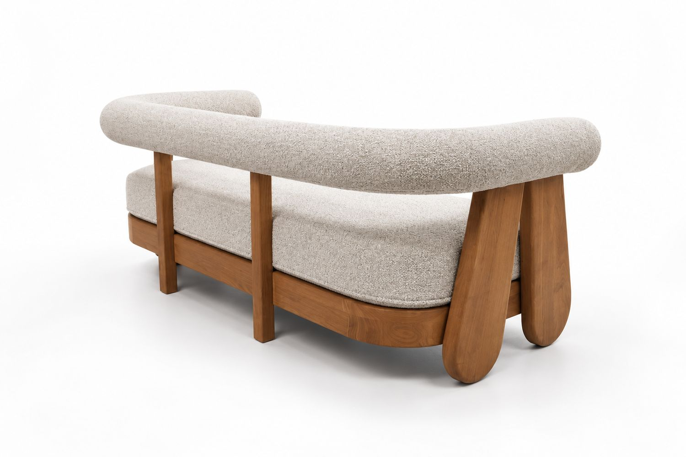
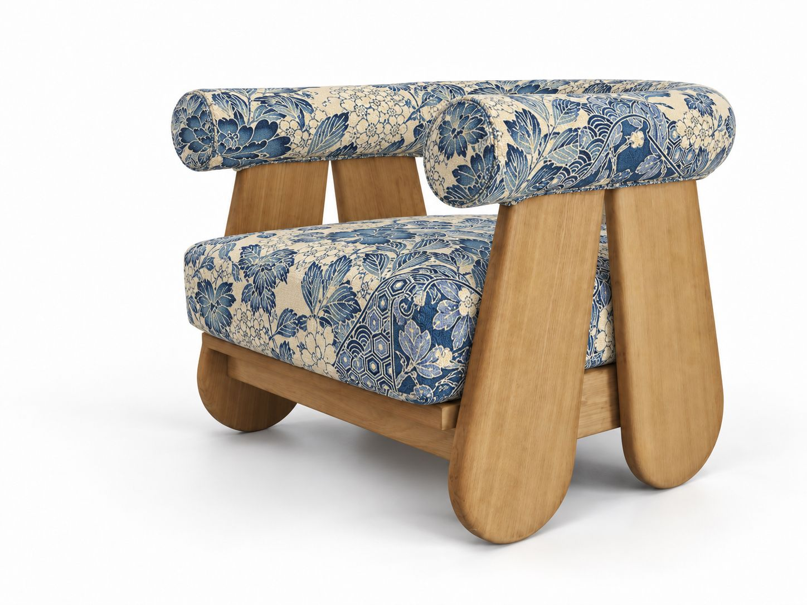
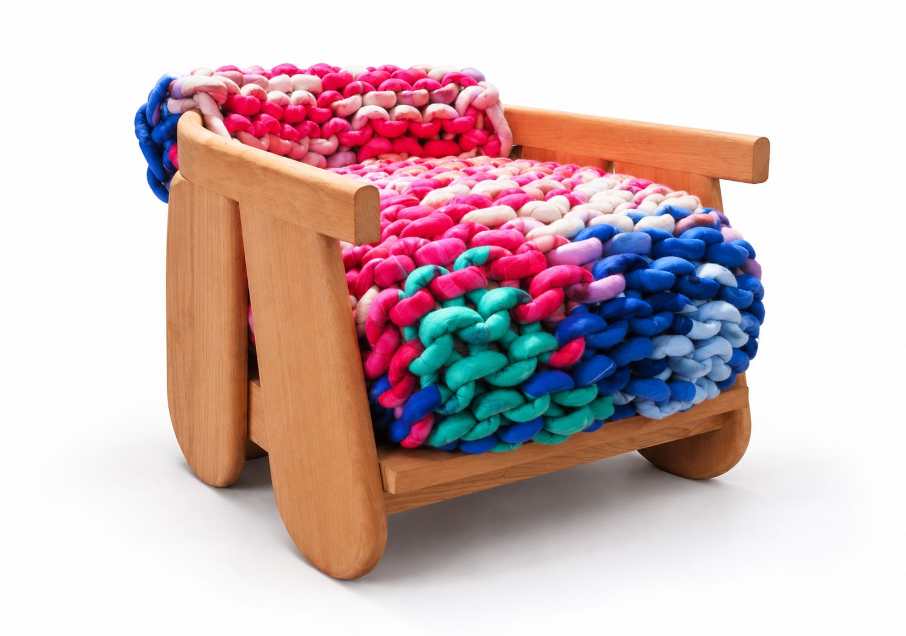

WORK 02 / 29
Sweet Tooth Collection
An indulgent collection inspired by the language of confectionery.
Year2024
MaterialsTeak wood and outdoor fabric
StageProduced

DESIGN STORY
Sweet Tooth draws on the delight and temptation of confectionery. Rounded timber forms and tactile upholstery give the pieces a soft, indulgent character, while variations in colour, texture and silhouette recall sweets in different flavours. The collection brings a sense of play to everyday furniture without losing its clarity of form.
PROJECT LINKS
- Deesawatdeesawat.com
PROJECT DETAILS
- Brand / Manufacturer
- Deesawat Industries Company Limited
SELECTED PRESENTATIONS
- 2024Style Bangkok
- 2024Salone del Mobile.Milano · Rho, Milan
- 2024EMERGE @ FIND · Singapore Design Week





